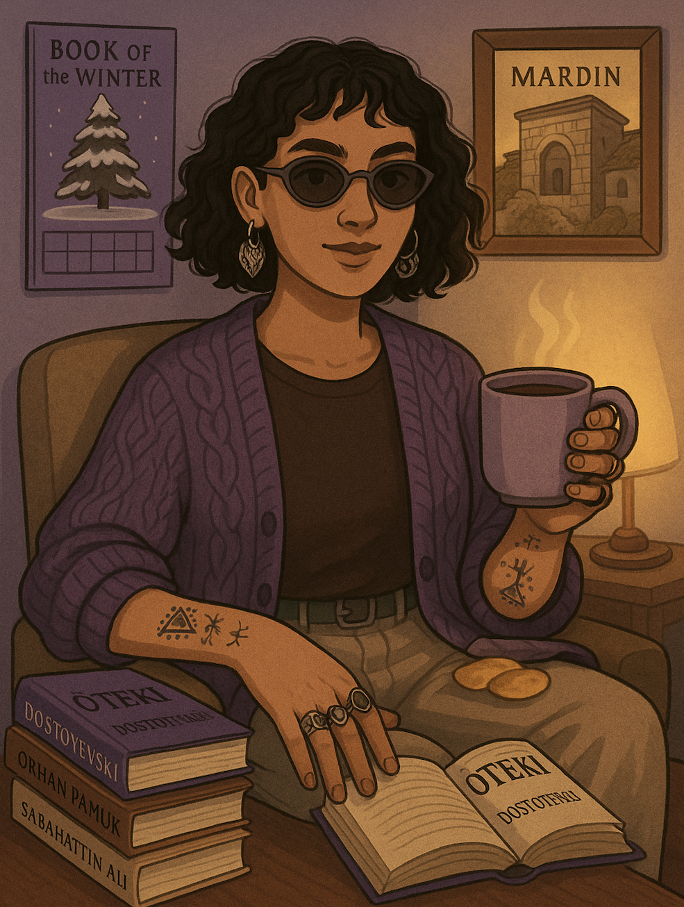

Nurcan Geçer
Sociologist
nrcn.gcr@gmail.com
Berlin/Germany
About Me
I am a sociologist with an interdisciplinary perspective, focusing on social dynamics and cultural heritage.
I prioritize detailed research and analysis, driven by a passion for creating and sharing knowledge through creative approaches.
Education
- Free University of Berlin – Interdisciplinary Studies of the Middle East (M.A., 2024 - ongoing)
- İstanbul Bilgi University – Psychology (Minor, 2019-2023)
- İstanbul Bilgi University – Sociology (Major, 2019-2023)
Skills & Languages
- Kurdish (Native), Turkish (Native), English (Advanced), German (Beginner), Spanish (Beginner)
- Project Writing and Management
- Microsoft Office & Google Workspace, GitHub, VS Code
- Coordination, Monitoring and Mentorship
Experience
-
Vice Chairman of the Board – GEL Association (Nov 2023 – May 2024)
🔗 geldernegi.org
Key responsibilities: Board Leadership, Strategy & Planning, External Relations, Support & Mentorship, Committee Leadership
-
Project Co-Coordinator – GEL Association (Mar 2024 – Jun 2024)
🔗 geldernegi.org
Key responsibilities: Coordination and Managing of Process, Budget Planning, Data Analyzing, Public Relations and Social Media Managing, Logistic Planning, Mentorship, Trainer
-
Assistant Coordinator – Flying Carpet Children Festival (Sep 2021 – Oct 2023)
🔗 flyingcarpetfestival.org
Key responsibilities: Coordination & Management of Teams, Cooperation and External Relations, Management & Planning of Logistic and Budget, Strategy Planning
-
Field Volunteer – Art Anywhere Association (Sep 2021 – Oct 2022)
🔗 heryerdesanat.org
Key responsibilities: Accompanying instructors in workshops, Accompanying children during transportation, Giving awareness training to children (environmentalism, gender equality)
References
- Prof. Dr.Kenan Çayır – Professor of Sociology, Istanbul Bilgi University
Email: kenan.cayir@bilgi.edu.tr
- Dr.Fırat Genç – Associate Professor of Psychology, Istanbul Bilgi University
Email: firat.genc@bilgi.edu.tr
- Sahba Aminikia – Coordinator & Founder, Flying Carpet Children Festival
Email: sahbakia@sirkhane.org
- Pınar Demiral – Founder, Art Anywhere Association
Email: pinardemiral@sirkhane.org